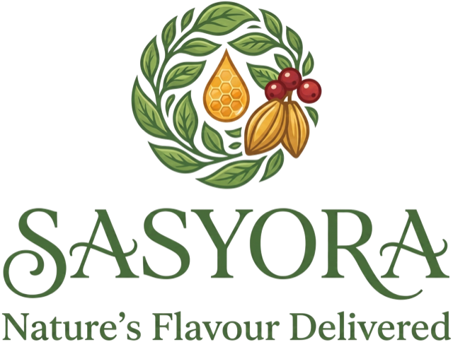
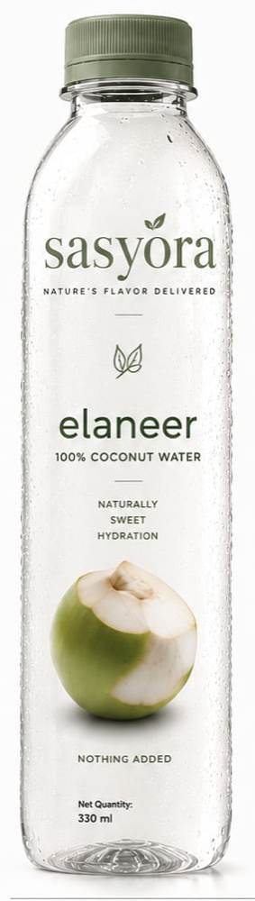

Sourced at peak season
Every crop has a short window when it tastes the way it should. We buy in that window rather than year-round, and we buy from the regions best suited to it.
A farm-produce brand from Karnataka, India
Sasyora carries produce from Indian farms to everyday tables around the world — beginning with Elaneer, our tender coconut water. Nothing added that doesn't belong.

Launching 2026
Our story
India is one of the world's largest growers of coconut, coffee and spices, and most of it comes from smallholder farms — families working a few acres each, guided by the monsoon and generations of practice. Sasyora began in Karnataka, among those farms, to carry their produce further than the local market without losing what makes it good.
Every crop has a short window when it tastes the way it should. We buy in that window rather than year-round, and we buy from the regions best suited to it.
The less that happens between the farm and the bottle, the more of the original flavour survives. Our processes are built around protecting it, not masking it.
What is on the label is what is in the bottle. If an ingredient isn't needed, it isn't there — and we would rather say less than overstate.
From our farms
We would rather get a single product right than launch a full shelf of them. So Sasyora starts with tender coconut water, sourced from Karnataka's coconut belt and the growing regions around it.
Tumakuru, Tiptur, Hassan & Mandya — Karnataka
Drawn from young green coconuts picked before the flesh hardens, when the water inside is at its lightest and sweetest. Bottled and sold as Elaneer.
More organic produce from the same farms will follow, in its own time.
Our home state
Karnataka sits in southern India, running from the Arabian Sea coast up through the forested slopes of the Western Ghats and out onto the dry Deccan plateau. Few places hold that much variation in one state, and it shows in what the land gives back.
Tumakuru, Tiptur, Hassan and Mandya together form one of India's best known coconut districts. Tiptur is well enough regarded that its name travels with the crop.
Heavy monsoon rain along the Ghats, drier plateau farmland further inland. Growers here plan around both, which makes them careful about timing.
Most holdings are modest and worked by the same family for generations. Those are the growers we buy from, and the reason we can ask how a crop was handled.
Where it begins
Pollachi is a farming town in Tamil Nadu, in southern India, sitting just below the foothills of the Western Ghats mountain range. The combination it offers is unusual: deep red soil, steady warmth, and rain carried in on two separate monsoons.
The result is coconut country. Groves run for kilometres in every direction, and the region has become one of India's reference points for coconut quality — a benchmark that growers across the neighbouring Karnataka districts know well and measure themselves against. Sasyora takes its cue from that standard.
Farm to bottle
Young coconuts are cut at the right stage, before the water starts turning.
Temperature is brought down quickly, because freshness is lost in hours, not days.
Every batch is tested before it is cleared for filling.
Sealed for the journey, so it reaches you tasting the way it left the grove.

The first harvest
Natural tender coconut water
Light, clean and faintly sweet, the way coconut water tastes when you drink it straight from the shell at a roadside stall in southern India. We have simply made it possible to have that anywhere.
Elaneer (el-uh-neer) comes from the Kannada word for tender coconut — the young, green one you drink, rather than the brown one you cook with. Kannada is the language of Karnataka, where Sasyora is based.
Why coconut water
A light, refreshing drink to enjoy as part of a balanced diet.
Contains naturally occurring electrolytes, including potassium.
Clean and mild in flavour, with no added sugar or preservatives.
Best served chilled — after a walk, with a meal, or on its own.
Nutrition
Typical values per 100 millilitres, as printed on the Elaneer label. Coconut water is a natural product, so figures vary a little from harvest to harvest.
| Nutrient | Per 100 ml |
|---|---|
| Energy | 19 kcal |
| Carbohydrate | 4.6 g |
| Natural sugars | 4.6 g |
| Fat | 0 g |
| Protein | 0 g |
| Sodium | 20 mg |
| Potassium | 250 mg |
No added sugar. The sugars listed occur naturally in the coconut water. Net quantity 330 ml. Store in a cool place; refrigerate after opening and drink within 24 hours.
Questions
Elaneer is our tender coconut water. The name comes from the Kannada word for a young green coconut — the stage when the water inside is plentiful and mild, before the flesh thickens into the mature brown coconut used in cooking.
Primarily from Karnataka's coconut districts — Tumakuru, Tiptur, Hassan and Mandya — and the growing regions nearby, with the Pollachi belt just across the state border as our reference point for quality. We buy from smallholder growers.
No added sugar and no preservatives. Any sugars listed on the panel occur naturally in the coconut water itself.
Elaneer is preparing to launch. This site is where we will announce availability, so the quickest way to hear first is to email us and ask to be told.
In time, yes — more organic produce from the same farms. For now our attention is on getting Elaneer right, and we would rather announce things when they are real than list them early.
International availability will follow our first launch. If you are enquiring from outside India, write to us with your market and we will keep you posted.
Contact
Retail and distribution enquiries, sourcing conversations, or plain curiosity — all welcome. We read everything that arrives.
trisarvanexus@gmail.com